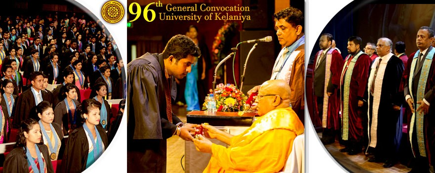

Research Degrees
The Doctor of Philosophy (Ph.D) program is offered by the following Faculties of the University of Kelaniya, under the auspices of FGS:
Faculty of Commerce & Management Publications & Research
Faculty of Humanities Research
Faculty of Medicine Research
Faculty of Science Research
Faculty of Social Science Research
The Doctor of Medicine (D.M.) degree is offered by the Faculty of Medicine of the University of Kelaniya.
Doctor of Medicine by Research
The Master of Philosophy (M.Phil.) program is offered by the following Faculties of the University of Kelaniya, under the auspices of FGS :
Faculty of Commerce & Management Papers/Presentations & Research
Faculty of Humanities Exams & Research
Faculty of Medicine Research
Faculty of Science Research
Faculty of Social Science Seminars & Research
Master Degrees
FACULTY OF COMMERCE AND MANAGEMENT
Master of Commerce (M. Com.)Degree Programme
Master of Business Administration (MBA) Degree Programme
Master of Business (MBus) Degree Programme
Master of Human Resource Management (MHRM) Degree Programme
FACULTY OF HUMANITIES
M.A. in Buddhist Studies
M.A. in Christian Studies
M.A. in Dancing
M.A. in Drama and Theatre
M.A. in Linguistics
M.A. in Literary Criticism
M.A. in Music
M.A. in Sinhala
M.A. in Fine Arts
FACULTY OF MEDICINE
Master of Public Health (MPH)
FACULTY OF SCIENCE
M. Sc. in Applied Microbiology
M. Sc. in Aquaculture & Fisheries Management
M. Sc. in Biodiversity and Integrated Environmental Management
M. Sc. in Computer Science
M. Sc. in Food & Nutrition
M. Sc. in Industrial and Environment Chemistry
M. Sc. in Management and Information Technology
FACULTY OF SOCIAL SCIENCES
M.A. in Archaeology
M.A. in Economics
M.A. in Geography
M.A. in History
M.A. in Library and Information Science
M.A. in Mass Communication
M.A. in Philosophy
M.A. in Political Science
M.A. in Sociology
M.S.Sc. in Archaeology
M.S.Sc. in Economics
M.S.Sc. in Geography
M.S.Sc. in History
M.S.Sc. in Library and Information Science
M.S.Sc. in Mass Communication
M.S.Sc. in Philosophy
M.S.Sc. in Political Science
M.S.Sc. in Sociology
GAMPAHA WICKRAMARACHCHI AYURVEDA INSTITUTE
M.Sc. in Mgmt. & Administration of Ayurveda Institutions
Postgraduate Diplomas
FACULTY OF COMMERCE & MANAGEMENT STUDIES
Postgraduate Diploma in Human Resource Management (PGDHRM)
Postgraduate Diploma in Marketing
FACULTY OF SCIENCE
Postgraduate Diploma in Industrial & Business Management
Postgraduate Diploma in Information Technology
Postgraduate Diploma in Mathematics
FACULTY OF SOCIAL SCIENCE
Postgraduate Diploma in Regional Planning (PGDRP)
GAMPAHA WICKRAMARACHCHI AYURVEDIC INSTITUTE (GWAI)
Postgraduate Diploma in Administration & Management of Ayurveda Institutions
JUNIOR COMMAND & STAFF COLLEGE, CHINA BAY (SRI LANKA AIR FORCE)
Postgraduate Diploma in Defense Management (PGDDM)
Undergraduate Degrees
FACULTY OF COMMERCE AND MANAGEMENT STUDIES
Bachelor of Commerce (Special) Degree
Bachelor of Commerce (Special) Degree in Entrepreneurship
Bachelor of Commerce (Special) Degree in Business Technology
Bachelor of Business Management (Human Resource) (Special) Degree
Bachelor of Business Management (Accountancy) (Special) Degree
Bachelor of Business Management (Finance) (Special) Degree
Bachelor of Business Management (Marketing) (Special) Degree
FACULTY OF HUMANITIES/
Bachelor of Arts (General) Degree
Bachelor of Arts (Special) Degree
FACULTY OF MEDICINE
Bachelor of Medicine & Bachelor of Surgery
Bachelor of Science, Speech & Hearing Sciecnes
FACULTY OF SCIENCE
Bachelor of Science (General) Degree
B.Sc. (Special) Degree
Bachelor of Science in Environmental Conservation and Management (General) Degree
Bachelor of Science in Environmental Conservation and Management (Special) Degree
Bachelor of Science in Management and Information Technology (General) Degree
Bachelor of Science in Management and Information Technology (Special) Degree
FACULTY OF SOCIAL SCIENCES
Bachelor of Arts (General) Degree
Bachelor of Arts (Special) Degree
Diploma & Certificate Courses
FACULTY OF COMMERCE AND MANAGEMENT
Diploma in Business (DCFM)
Diploma in Marketing (DM)
FACULTY OF HUMANITIES
Diploma Course in Modern Languages
Diploma in Photography (PHG)
Diploma in Tamil (DTML)
Certificate Course in Hindi (HIN)
Certificate Course in Chinese Language (CH\CC)
Diploma in Pali & Buddhist Studies (BD\Dip)
Certificate Course in Astrology (AST)
Certificate Course in Sinhala for Foreign Student
Diploma in Hindi (DHIN)
Diploma in English for Teacher of English (DETE)
Diploma in Business English (DBE)
Diploma in English for Professional Purposes (DEPP)
FACULTY OF SCIENCE
Diploma in Applied Chemistry (DACH)
FACULTY OF SOCIAL SCIENCE
Diploma in Disaster Management (GDDM)
Diploma in History (HIS)
Diploma in Library and Information Science I (LS)
Diploma in Library and Information Science II (LS)
Diploma in Library and Information Science III (LS)
Diploma in Mass Communication (MACO)
Diploma in Counselling
Diploma in International Relations (IR)
Stay connected with us